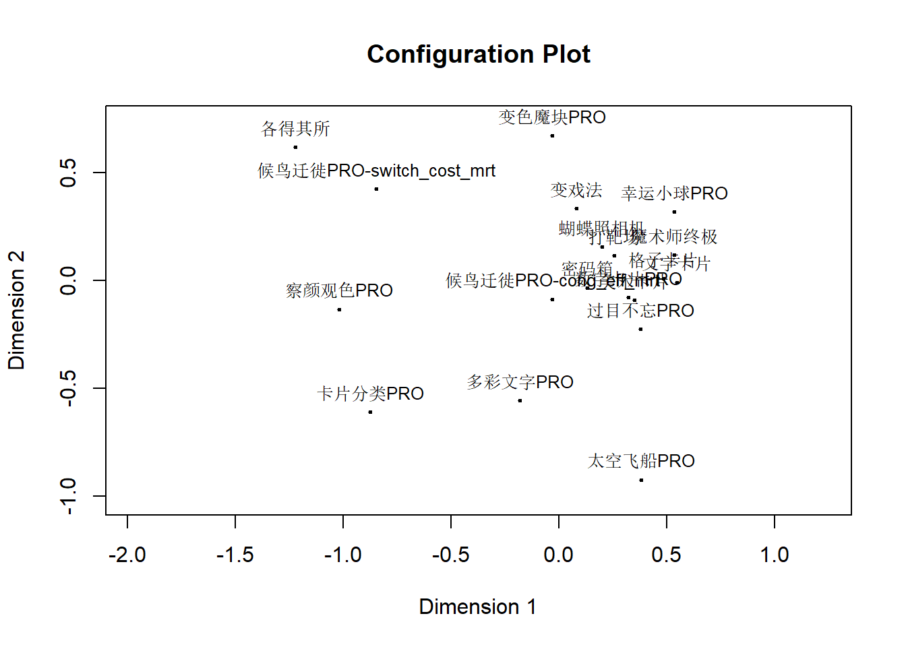
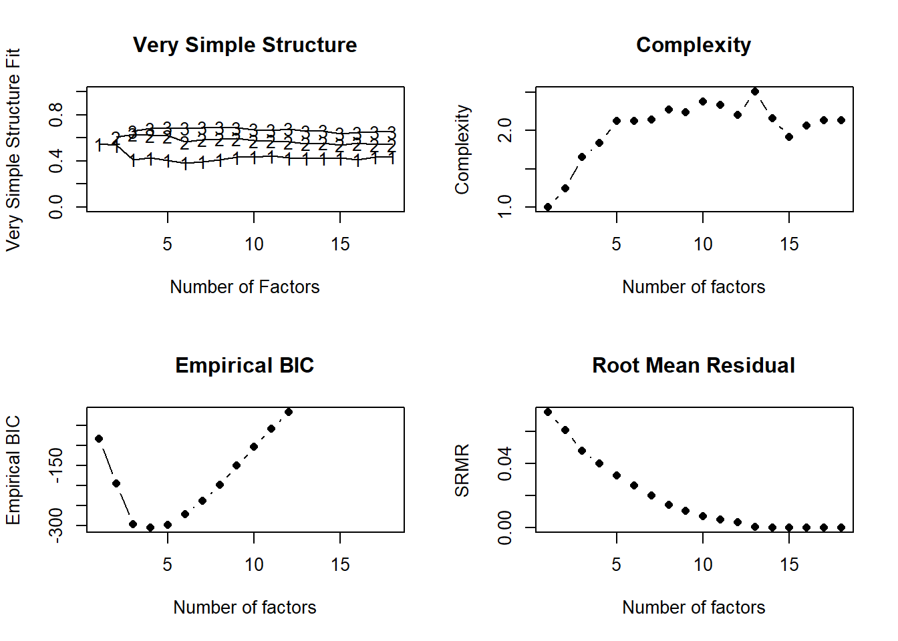
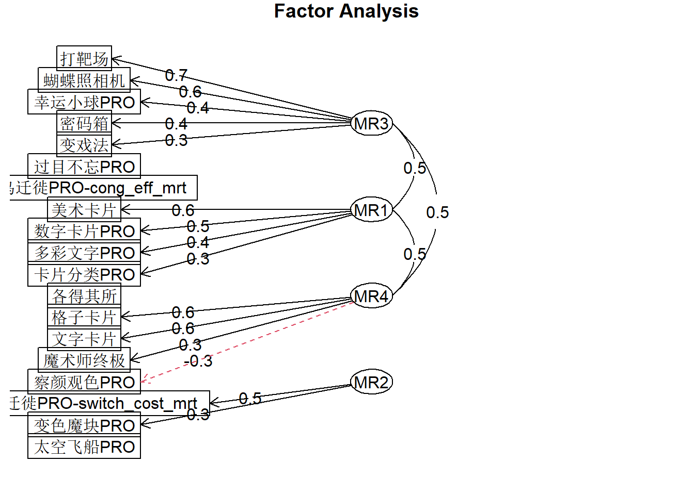
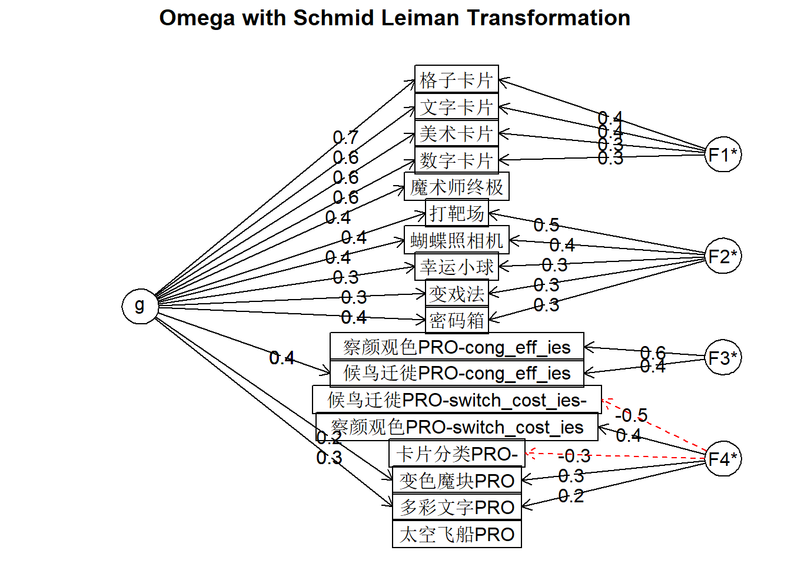

Code
library(tidyverse)
library(corrr)
library(BayesFM)
library(showtext)library(tidyverse)
library(corrr)
library(BayesFM)
library(showtext)targets::tar_load(users)
ind_filt <- readxl::read_excel("config/indices_filtering.xlsx")
dim_order <- c(
"attention", "multitask", "switching", "inhibition",
"reasoning", "complex span", "working memory", "short term memory",
"long term memory", "probability learning",
"speeded IP", "strategic IP",
"perception", "math", "language"
)
indices_clean <- targets::tar_read(indices_clean) |>
full_join(ind_filt, by = c("game_name", "game_name_abbr", "index_name")) |>
filter(!is.na(check_result) & check_result != "target-stash") |>
arrange(factor(dimension, dim_order)) |>
mutate(test = if_else(reversed == "yes", -test, test)) |>
group_by(game_name, index_name) |>
mutate(test = if_else(test %in% boxplot.stats(test)$out, NA_real_, test)) |>
ungroup()
indices_ef <- indices_clean |>
filter(
dimension %in% c("complex span", "working memory", "switching", "inhibition")
) |>
add_count(user_id, game_name) |>
mutate(
game_index = if_else(
n == 1,
game_name,
str_c(game_name, index_name, sep = "-")
)
) |>
pivot_wider(
id_cols = user_id,
names_from = game_index,
values_from = test
) |>
select(-user_id)The include tasks:
correlate(indices_ef, quiet = TRUE) |>
rearrange(method = "HC") |>
stretch() |>
mutate(across(c(x, y), as_factor)) |>
ggplot(aes(x, y)) +
geom_tile(aes(fill = r)) +
scico::scale_fill_scico(palette = "bam", midpoint = 0, direction = -1) +
coord_fixed() +
theme_minimal(base_size = 18) +
labs(x = "", y = "", fill = "Pearson's", color = "") +
theme(axis.text.x = element_text(angle = 45, hjust = 1))
mds <- indices_ef |>
cor(use = "pairwise") |>
smacof::sim2diss(to.dist = TRUE) |>
smacof::mds(ndim = 2, type = "mspline")
# plot(mds, plot.type = "Shepard", main = "Shepard Diagram (Ratio Transformation)")
# par(family = "SimHei")
plot(mds)
nfactors_test <- psych::nfactors(indices_ef)
fit <- psych::fa(indices_ef, 4)
psych::fa.diagram(fit)
fit_bifac <- psych::omega(indices_ef, 4, plot = FALSE)
psych::omega.diagram(fit_bifac)
# mcmc <- indices_ef |>
# mutate(across(.fns = ~ scale(.)[, 1])) |>
# befa(verbose = FALSE) |>
# post.column.switch() |>
# post.sign.switch()# hppm <- summary(mcmc, what = "hppm")
# hppm |>
# pluck("alpha", "m1") |>
# as_tibble(rownames = "alpha_term") |>
# separate(alpha_term, c(NA, "game_index"), sep = ":") |>
# mutate(game_index = reorder(game_index, dedic)) |>
# ggplot(aes(game_index, dedic)) +
# geom_tile(aes(fill = mean)) +
# geom_text(aes(label = round(mean, 2)), color = "white") +
# scico::scale_fill_scico(palette = "bam", midpoint = 0, direction = -1) +
# coord_fixed() +
# theme_minimal(base_size = 18) +
# labs(x = "Term", y = "Factor",
# title = str_c("Posterior Probability: ", round(hppm$hppm$prob, 2),
# ", with ", hppm$hppm$nfac, " factors")) +
# theme(axis.text.x = element_text(angle = 45, hjust = 1))# fitted1 <- lavaan::cfa(
# 'Updating =~ `美术卡片` + `数字卡片` + `格子卡片` + `文字卡片`
# # AscMem =~ `人工语言-中级` + `欢乐餐厅` + 图片记忆
# VerbalSTM =~ `幸运小球` + `密码箱` + `顺背数PRO`
# SpatialSTM =~ `宇宙黑洞` + `打靶场` + `蝴蝶照相机` + `位置记忆PRO`',
# indices_memory, std.lv = TRUE, std.ov = TRUE
# )
# semPlot::semPaths(
# fitted1, what = "std", edge.color = "black", rotation = 2,
# sizeMan = 6, sizeLat = 8, edge.label.cex = 0.6,
# nCharEdges = 5, esize = 1, trans = 1, nCharNodes = 0
# )
# lavaan::summary(fitted1, fit.measures = TRUE, estimates = FALSE)